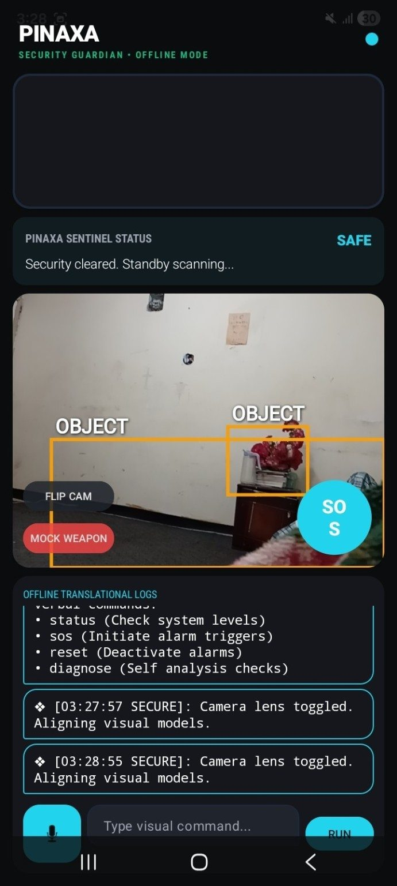
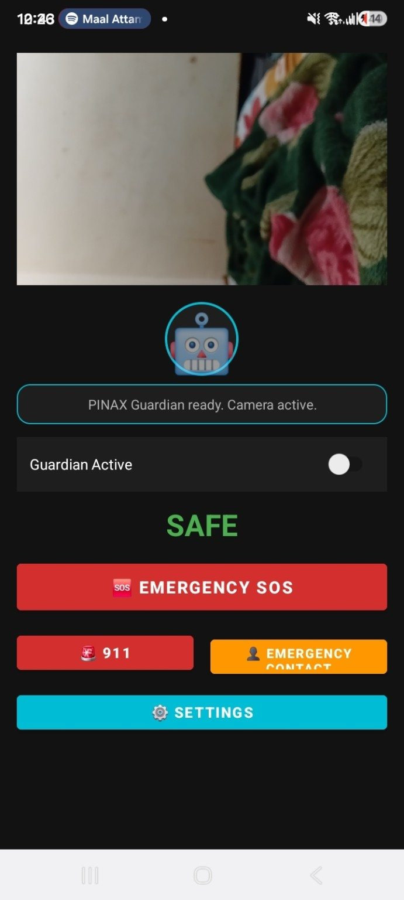
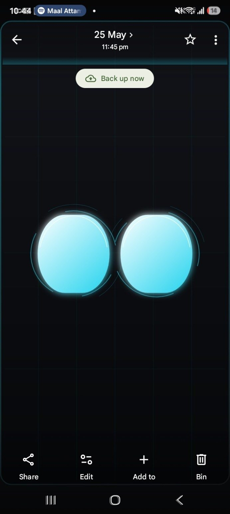
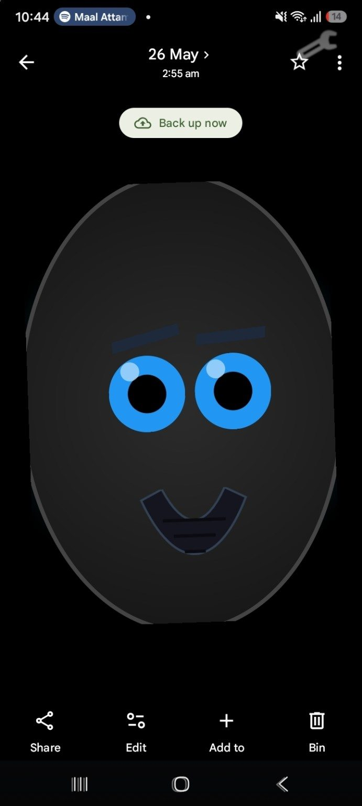
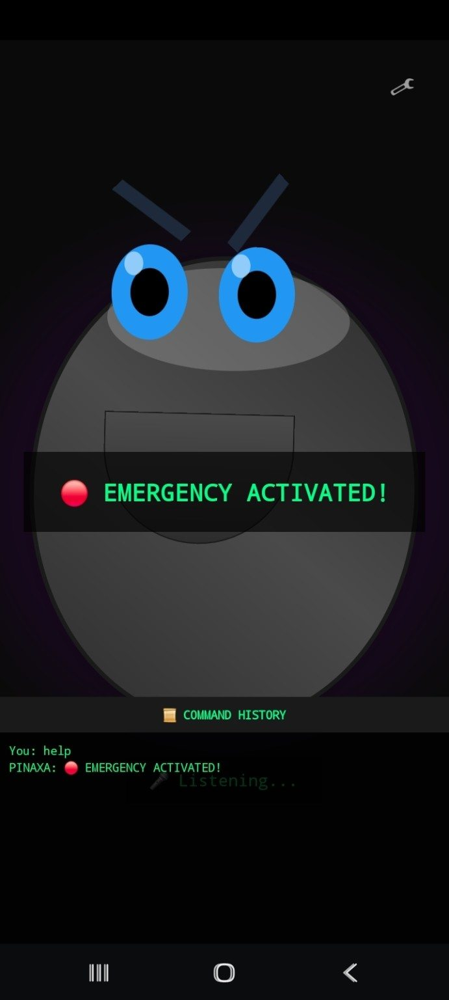
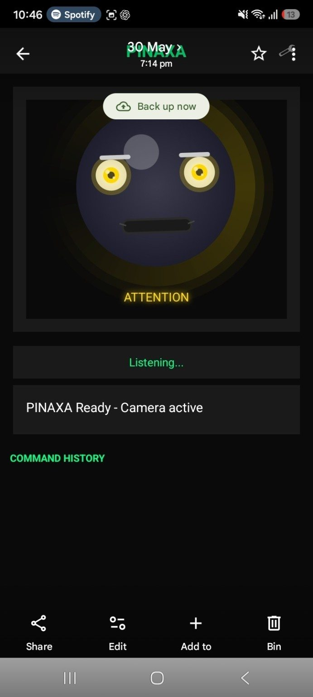
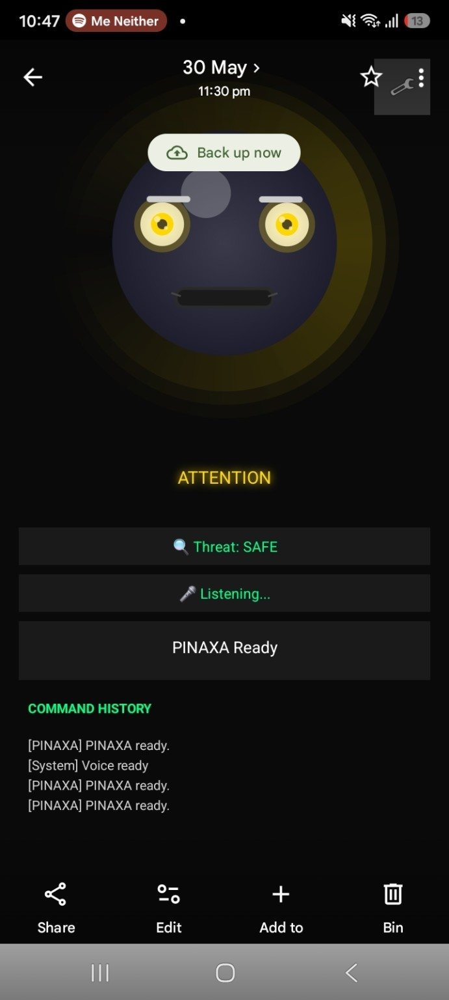

Ethiopia / Independent Android + Web Engineering
I started with a phone.
Then I started building.
I'm Geda Taye, a self-taught developer from Ethiopia. This is the real story of the Android projects I built, the errors that stopped me, the robot faces I kept redesigning, and the work that finally made it to users.
Follow the screenshots from early experiments to the apps that shipped. You'll see what worked, what didn't, and why I changed direction.

The part that usually gets left out
Before there were products, there were errors on my phone.
I wasn't building in a computer lab. I wrote Android code directly on a smartphone, compiled it there, installed the APK on the same device, and watched what happened. Sometimes I made progress. Sometimes I spent hours on a missing import or a build that would not complete.
I started keeping screenshots because they showed something a polished portfolio cannot: what it really took to learn.
MAY 19, 2026
The first obstacles
Android build logs with missing ML Kit imports in CameraHelper.java, resource errors and model integration problems.
MAY 25–30
PINAXA comes alive
Actual camera and emergency interfaces, voice commands, robot-face experiments and safety check-in screens.
SEPTEMBER
Trying automation
AgentBridge test screens show Fiverr navigation, step logs and a final task report.
OCTOBER +
Shipping and building
NONOX on Google Play, and continued work on JLab, JABAA Shop and EthioDate.
“Every screen on this page has a story behind it. Most of those stories start before the screen looked good.”
May 2026 / Chapter one
I wanted PINAXA to be a guardian, not just an alarm.
My original goal was a security companion that could use the phone's camera and microphone, respond to a person, change its expression, and help during an emergency. I wrote Java, compiled real Android builds, and kept changing the system as I tested it.
01 / THE BUILD ERRORS
I couldn't even get the camera integration to compile at first.
I have old screenshots of the errors. One shows missing ML Kit classes in CameraHelper.java. Others show theme/resource failures and a model-download task that stopped the build. On a phone-only setup, every dependency mistake became something I had to investigate myself.
Fixing an error didn't mean I had finished. It meant I had finally reached the next thing I needed to test.
02 / THE FIRST INTERFACES
Then the guardian started to look like a real application.
I had a camera preview, object boxes, status indicators, command logs and an SOS control on screen. I also tested a separate early guardian dashboard with emergency buttons.
One of the logs records weapon_knife_mock: a simulated alert. I'm leaving that detail visible. This was a real integration experiment, but a mock alert is not proof that a model could safely identify weapons in the real world.


03 / THE ROBOT
I kept changing its face because I wanted it to communicate.
At first I tried glowing cyan scanner eyes. Then a small purple face. Then blue eyes with different expressions. I tested an emergency screen that said “EMERGENCY ACTIVATED!”, and another that asked the user to say “I'm okay”. By May 30 I was experimenting with yellow eyes and a separate ATTENTION state.
The eight images below are the **original Android captures**. They aren't generated illustrations, and they aren't eight unrelated projects. They're different moments from my repeated PINAXA builds.








04 / LOST FILES AND AN IMPORTANT DECISION
I built the bigger idea. Then I chose to make it smaller.
I went through many versions. I remember experimenting with local AI models and testing functionality, but I later deleted some model files and lost track of older builds. The archives I still have contain substantial Android code and some mock or incomplete model paths, so I separate what I remember testing from what those surviving files can prove today.
Eventually I asked myself a more useful question: if someone were frightened and needed help, what could they understand and operate quickly?
That changed PINAXA. The later version focuses on a large panic button, configurable shake/duress protection, emergency contacts, a safety timer, event history and protected evidence access. It is simpler by design—not because I never attempted the larger architecture.

The early detection screens include mock tests. Neither a prototype interface nor a screenshot establishes certified threat detection or guaranteed emergency dispatch. Real-world safety behavior requires independent testing.
The next chapter / A published Android product
NONOX was where my Android experience reached Google Play.
After spending so much time fighting with Android permissions, build systems, background behavior and system components, I turned to a different problem: the distractions on a phone itself.
I started making NONOX as a way to control those distractions. It grew into app blocking, phone-lock sessions, a Task Force focus mode and statistics. I had to deal with Accessibility Service behavior, Device Admin restrictions, service lifecycle issues and what happens when a device restarts in the middle of a lock.
The work was not finished when the home screen looked right. It had to behave correctly when the phone was being used normally.
Eventually, I published NONOX on Google Play. That meant going beyond personal experiments into Android release and distribution requirements.

RECOGNITION
Someone outside my room noticed the work.
NONOX placed third among 52 participating founders in SaaS Hive's July 2026 Launch Sprint. SaaS Hive also published a founder interview about the 420-hour smartphone development journey.

The rest of the story
One phone. Several very different problems.
I didn't keep making the same app. Every project forced me to learn something different, from following Android screen states to managing customer accounts and organizing my own work.
SEPTEMBER 2026 / EXPERIMENT
AgentBridge
I wanted to see whether an Android agent could do more than answer a question. In my test screens, it attempted to open Fiverr, find gig statistics, track actions and return a report.
The interface recorded 16 impressions and a completed-task status. I present that as a historical test record, not independently verified autonomous performance.
Android navigationTask logsA TOOL I NEEDED

JLab
When I was juggling projects, notes and tasks on a phone, I wanted a better place to organize them. So I built a native Android workspace with projects, files, calendar and insights, using Kotlin and Jetpack Compose.
Explore JLabA REAL STORE
JABAA Shop
Building an online shop meant thinking beyond the screen: book listings, customer accounts, data, purchases, receipt approval and delivery. I used HTML, CSS, JavaScript, Supabase and Netlify for a marketplace people can actually visit.
Visit the live shopPEOPLE AND DATA
EthioDate
EthioDate gave me a new kind of challenge. People need to discover profiles, match, chat, authenticate and manage premium access. That also means treating identity and private information carefully.
See EthioDate's showcaseWhy this matters to a client
I can explain what it takes to build the thing—not just how it should look.
When I talk about Android apps, I've dealt with build failures, device permissions, foreground behavior, testing and publishing. When I talk about web products, I've worked with customer flows, authentication, database-backed features and real deployments.
I don't pretend every experiment became production-ready. I show the difference between a test, a functioning build and a released product. That's how I approach client work too: make the requirements clear, build, test, fix and deliver.
JavaKotlinJetpack ComposeAndroid system APIsSupabaseJavaScriptGitHubReal-device testing
“I didn't wait until I knew everything to start building. Building is how I learned.”